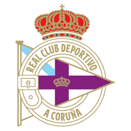
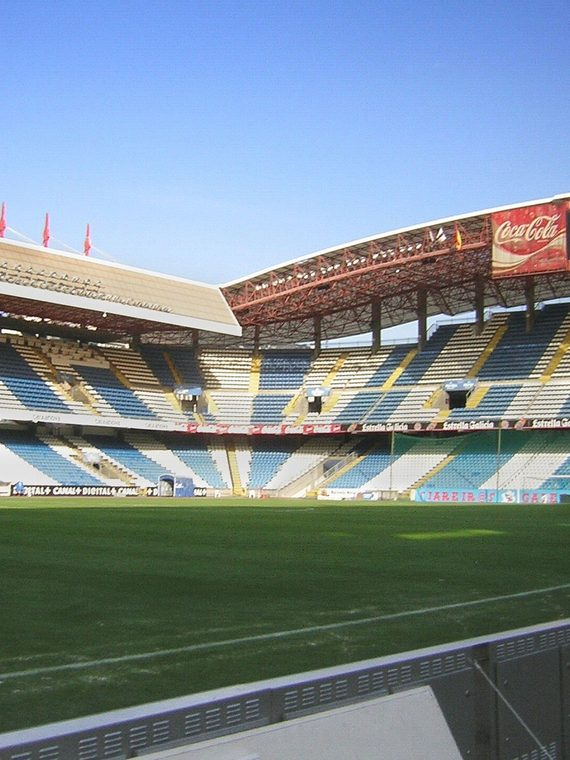
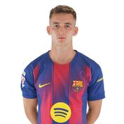
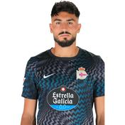
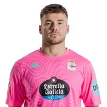
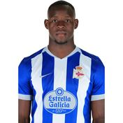

DLEl 'Súper Depor' de los 2000
RC Deportivo de La Coruña
1906
Año de fundación del club
Deportivistas / Súper Depor
Una breve historia
Fundado en 1906, el Deportivo vivió su época dorada entre finales de los 90 y mediados de los 2000, apodada 'Súper Depor', con la conquista de su única Liga en la temporada 1999/2000 y una memorable semifinal de Champions League en 2004.
Fieles a los colores
de A Coruña

📷Foto pendiente
(deportivo-de-la-coruna-1.jpg)';" />
📷
Foto pendiente
(deportivo-de-la-coruna-2.jpg)';" />
Foto pendiente
(deportivo-de-la-coruna-2.jpg)';" />
Títulos y logros
Vitrina de títulos
0
LaLiga
0
Copa del Rey
La rivalidad
El duelo que enciende a la afición
RC Deportivo de La Coruña
VS
RC Celta de Vigo — Derbi Gallego
Temporada 2026 / 27
Plantilla del primer equipo
Datos de ejemplo — reemplázalos con la plantilla real en data/teams.js.
1
🧑';" />
Germán
Portero
2
🧑';" />
A. Alti
Defensa
3
🧑';" />
Comas
Defensa
4
🧑';" />
Noubi
Defensa
5
🧑';" />
Dani Barcia
Defensa
6

🧑';" /> M. Casadó Centrocampista
7
🧑';" />
Aubameyang
Delantero
8
🧑';" />
D. Villares
Centrocampista
9
🧑';" />
Eddahchouri
Delantero
10
🧑';" />
Yeremay
Centrocampista
11
🧑';" />
Mella
Centrocampista
12
🧑';" />
Quagliata
Defensa
13

🧑';" /> Leo Román Portero
14
🧑';" />
Riki
Centrocampista
15
🧑';" />
M. Loureiro
Defensa
16
🧑';" />
Amatucci
Centrocampista
17
🧑';" />
Angeliño
Defensa
18
🧑';" />
Asp - Jensen
Centrocampista
19
🧑';" />
Luismi Cruz
Delantero
20
🧑';" />
J. M. Giménez
Defensa
21
🧑';" />
Mario S.
Centrocampista
22
🧑';" />
Ede
Defensa
23
🧑';" />
X. Navarro
Defensa
24
🧑';" />
Adama
Delantero
25

🧑';" /> A. Ferllo Portero
32

🧑';" /> Nsongo Bil Delantero
33
🧑';" />
Kevin
Delantero
34
🧑';" />
Gijselhart
Centrocampista